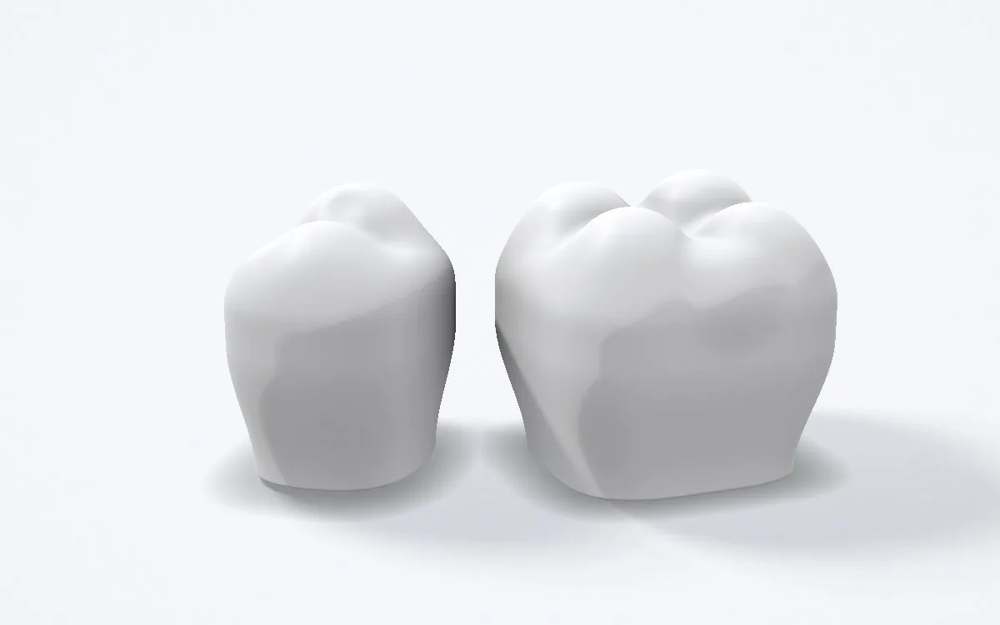

Services
Designed in exocad, back in 24–48 hours.
CAD design for crown and bridge, implant and full-arch work, plus wax-ups and appliances. Every case is designed in exocad and returned within 24–48 hours, depending on complexity.

From a single crown to a full arch.
-
01
Crown & bridge and veneers
-
02
Implant restorations
-
03
Full-arch / All-on-X cases, including split bar files
-
04
Digital wax-ups
-
05
Splints and other CAD appliances, on request
Three steps that fit your existing workflow.
-
Image to source · 4:3 exocad screenshot: a lab's scan as it arrives, with the prep and opposing arch visible. Patient details hidden.
Step 01
Send your case through the Submit a case form as STL, PLY or OBJ scans.
-
Image to source · 4:3 exocad screenshot: the finished design, showing the margin line, contacts and occlusion.
Step 02
I design it in exocad and send you a preview to approve.
-
Image to source · 4:3 The exported STL, or the milled or printed restoration on a plain white surface.
Step 03
Your finished files come back within 24–48 hours as STLs ready for your mill or printer.
Priced per unit, first crown free.
| Service | Charged per | Price | Turnaround |
|---|---|---|---|
| Crown | unit | £ TBC | 24–48 h |
| Bridge | unit | £ TBC | 24–48 h |
| Veneer | unit | £ TBC | 24–48 h |
| Implant restoration | unit | £ TBC | 24–48 h |
| Full-arch / All-on-X, incl. split bar files | arch | £ TBC | 24–48 h |
| Digital wax-up | unit | £ TBC | 24–48 h |
| Splint | appliance | £ TBC | 24–48 h |
| Other CAD appliances | case | On request | On request |
| Trial design (e.g. a crown) | first case | Free | 24–48 h |
VAT, rush fees and volume discounts to be confirmed.
Ready when you are
Have a case ready to go?
Send it through the Submit a case form, or start with a free trial design.